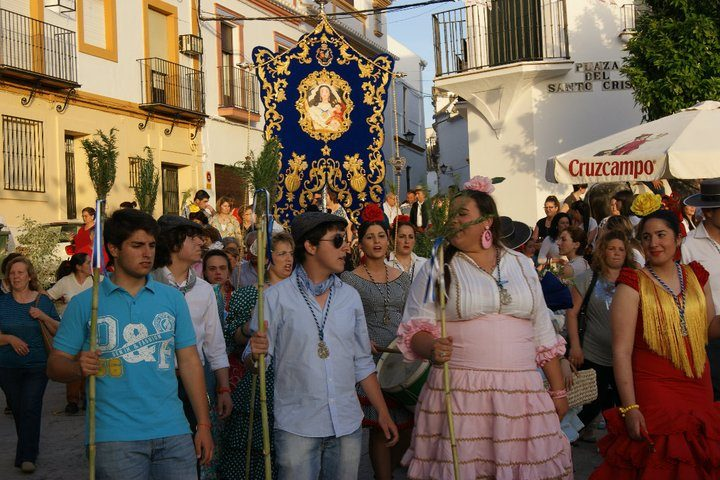

Gemelos electorales · Elecciones: 2004-2023
Arahal y Marchena, a 14,8 kilómetros y con la misma renta: 15 puntos de distancia en el voto a la derecha
Arahal y Marchena tienen casi la misma población (19.139 y 19.287 habitantes), la misma renta (17.139 y 17.053 euros) y un paro parecido. El 23J, PP, Vox y Cs sacaron el 35,1 % en Arahal y el 49,7 % en Marchena. En las municipales de mayo de 2023, Arahal eligió una lista de Izquierda Unida (42,5 %); Marchena, al PSOE (49,3 %).
Dato: verificable y reproducible
Revisión pendiente: los datos y el texto de esta página aún no han pasado la comprobación manual. No se publica en buscadores hasta que se complete.
La pregunta: ¿Por qué dos pueblos casi idénticos de la campiña sevillana votan tan distinto?
Gemelos de la campiña
DatoArahal y Marchena están a 14,8 kilómetros, en la campiña de Sevilla. Por población, renta, edad y paro se parecen mucho: 17.139 y 17.053 euros de renta por unidad de consumo, 41,7 y 41,9 años de edad media, un paro del 21,9 % y del 23,2 % en 2021.
DatoEl modelo de esta serie les asigna casi el mismo voto a la derecha: 45,0 % y 44,6 %. Arahal votó 10,0 puntos menos; Marchena, 5,0 puntos más.
Dos caminos desde 2004
DatoEn 2004, el PSOE sacaba el 70,9 % en Arahal y el 57,4 % en Marchena. La derecha, el 17,0 % y el 24,3 %.
DatoDesde entonces la derecha creció en los dos, como en toda la provincia (del 27,9 % al 46,7 %), pero más en Marchena: hasta el 49,7 %, frente al 35,1 % de Arahal. La distancia pasó de 7,3 puntos en 2004 a 14,6 en 2023.
DatoEl PSOE ganó en los dos el 23J: 49,5 % en Arahal y 37,4 % en Marchena. Vox sacó el 9,0 % y el 14,2 %.
En el ayuntamiento, otro mapa
DatoEn las municipales de mayo de 2023, la lista más votada en Arahal fue la de Izquierda Unida, «Con Andalucía Izquierda Unida con Arahal», con el 42,5 %. En Marchena ganó el PSOE con el 49,3 % y el PP sacó el 26,3 %.
Un tercer pueblo
DatoOsuna, con 17.194 habitantes y 16.859 euros de renta, completa el trío: su voto a la derecha (37,4 %) está más cerca de Arahal que de Marchena. Más allá, Écija (56,2 %, ganó el PP) y Paradas (36,2 %) muestran que en la campiña el perfil es casi uniforme y el voto no.
Sobre el terreno
DatoArahal celebra a principios de septiembre la Fiesta del Verdeo, dedicada a la campaña de recogida de la aceituna de mesa. Fuentes: 1, 2
DatoLa iglesia de San Juan Bautista de Marchena guarda en su sacristía una serie de lienzos de Francisco de Zurbarán encargados en la década de 1630. Fuentes: 1, 2
Lo que no sabemos
- HipótesisPor qué. La historia jornalera de la campiña, la implantación de Izquierda Unida en algunos ayuntamientos y la duración de las alcaldías son hipótesis que esta pieza no ha contrastado con dos fuentes independientes.
Los datos
| Municipio | Habitantes | Renta | Paro | Derecha | Previsto | Diferencia | PSOE | Gana |
|---|---|---|---|---|---|---|---|---|
| Arahal | 19.139 | 17.139 | 21,9 | 35,1 | 45,0 | −10,0 | 49,5 | PSOE |
| Paradas | 6.794 | 15.604 | 23,8 | 36,2 | 43,0 | −6,8 | 44,2 | PSOE |
| Morón de la Frontera | 26.997 | 16.846 | 27,0 | 36,6 | 44,6 | −8,1 | 45,1 | PSOE |
| Osuna | 17.194 | 16.859 | 22,9 | 37,4 | 44,1 | −6,7 | 49,1 | PSOE |
| La Puebla de Cazalla | 10.737 | 15.844 | 24,0 | 41,4 | 44,1 | −2,7 | 40,5 | PSOE |
| Carmona | 29.794 | 17.589 | 24,8 | 47,3 | 45,3 | +2,0 | 38,0 | PSOE |
| Marchena | 19.287 | 17.053 | 23,2 | 49,7 | 44,6 | +5,0 | 37,4 | PSOE |
| Utrera | 52.013 | 17.246 | 32,0 | 50,3 | 45,5 | +4,8 | 36,1 | PSOE |
| Écija | 39.433 | 16.925 | 25,5 | 56,2 | 44,3 | +11,9 | 32,6 | PP |
Método y fuentes
- Qué se compara
- Arahal y Marchena, dos municipios casi iguales de la campiña sevillana según el INE, y otros siete municipios de la campiña.
- Límites
- «Gemelos» según los indicadores del INE; pueden diferir en otros que los datos no recogen. «Derecha» suma PP, Vox y Cs. Distancia entre centroides de los términos municipales.
- Metodología completa
- Cómo se calculan los porcentajes, el modelo, los gemelos y los escaños
- Fuentes
- Ministerio del Interior, resultados electorales por mesa (Infoelectoral). Congreso 2004-2023 vía pollspaindata, commit ee5ecda; municipales 2007-2023 de los ficheros de Infoelectoral
- INE, Atlas de Distribución de Renta de los Hogares 2023 (renta, edad, población), vía ineAtlas.data
- INE, Censo de Población y Viviendas 2021 (estudios, paro, extranjeros)
- Autoría
- Nacho
- Revisión de datos y texto
- Pendiente
- Publicado · actualizado
- 2026-10-06 · 2026-10-07
- Correcciones
- Ninguna. Historial del Atlas